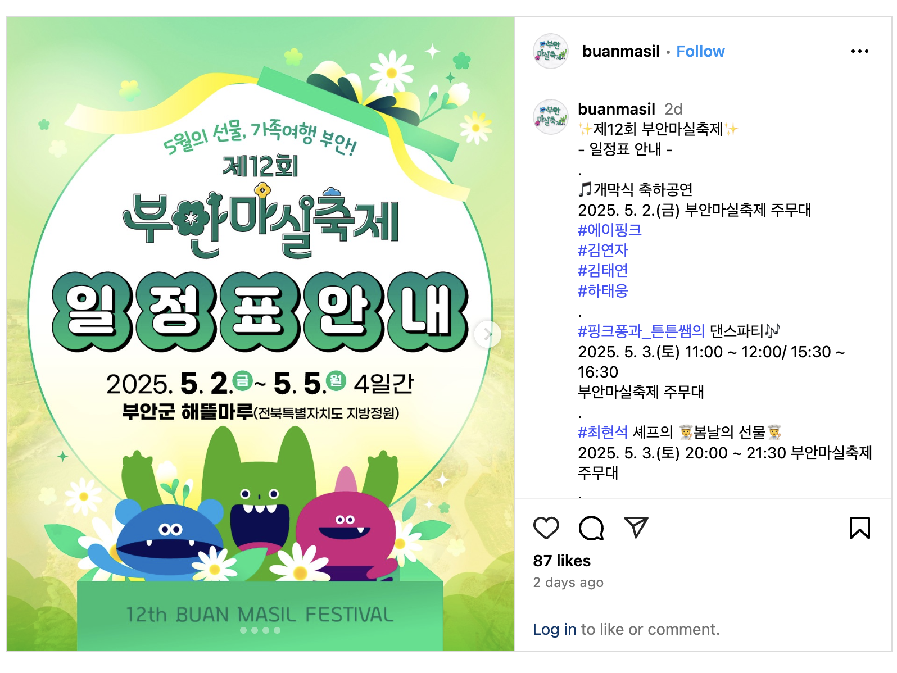
refs
- https://www.buanmasil.com/buanmasil/main.php
- https://www.instagram.com/buanmasil/reel/DJEQ2VHhD61/
- https://blog.naver.com/overroad89/223840515140
개요
- 2025년 제12회 부안마실축제, 5월 2일(금)~5월 5일(월) 개최함
- 장소: 전북 부안군 해뜰마루 지방정원 일원임
- 차타고가면 1시간10분 (약 70km)
- 입장료 무료, 일부 체험 유료 있음
- 부안 자연, 먹거리, 전통, 문화, 가족 체험 등 오감만족 지역축제임
- 주요 프로그램: 퍼레이드, 개막식·폐막식 공연, 인형극, 영화, 푸드쇼, 마마스앤파파스 뮤직페스티벌, 청소년 경연, 각종 체험존 등 다양함
- 개막식·폐막식·뮤직페스티벌 등 메인 무대에 유명 가수 출연(에이핑크, 김연자, 송가인 등)
- 가족 단위, 친구, 연인, 혼자 와도 즐길 거리 많음. 피크닉존, 특산물 판매, 기념품 부스, SNS 이벤트 등 있음
주요프로그램
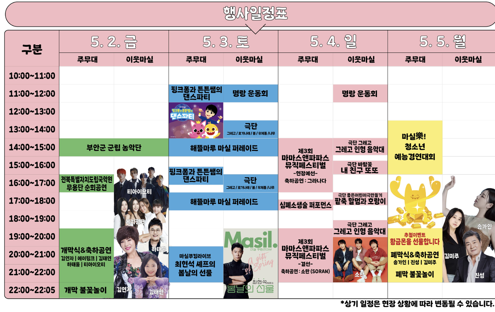
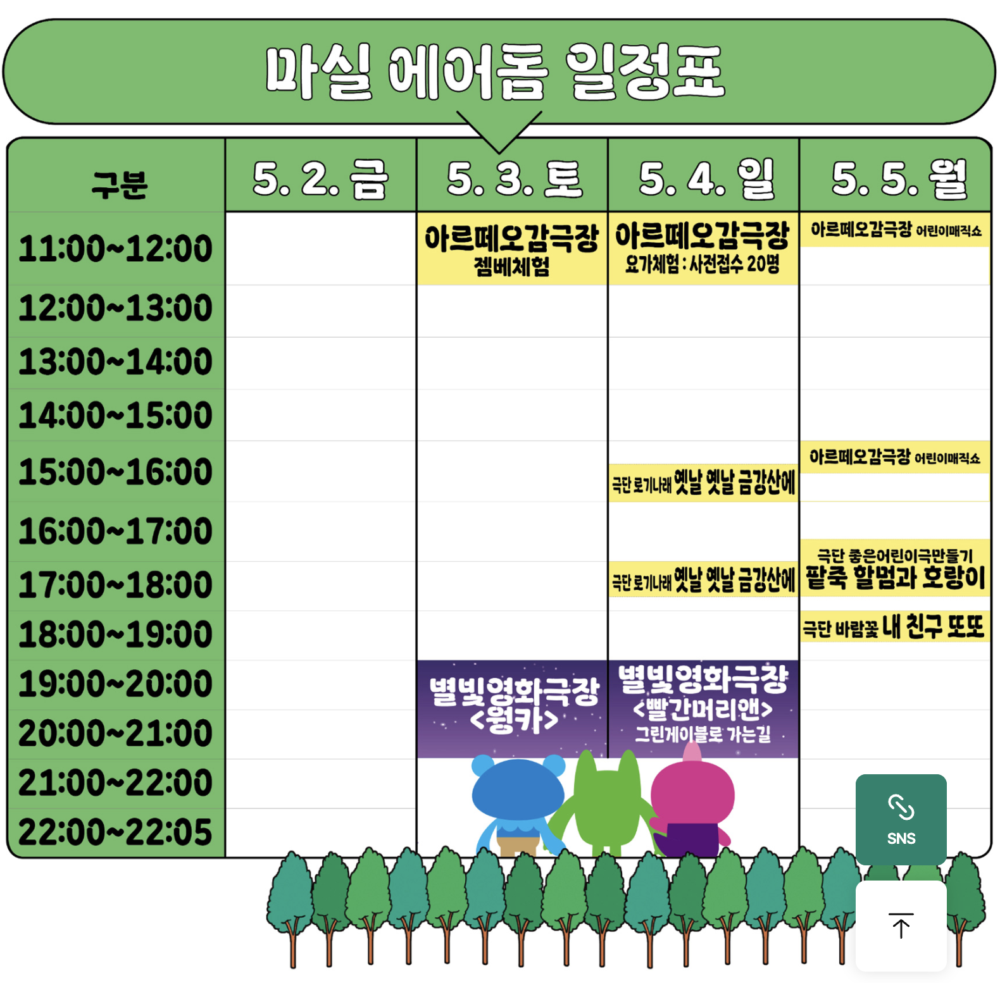
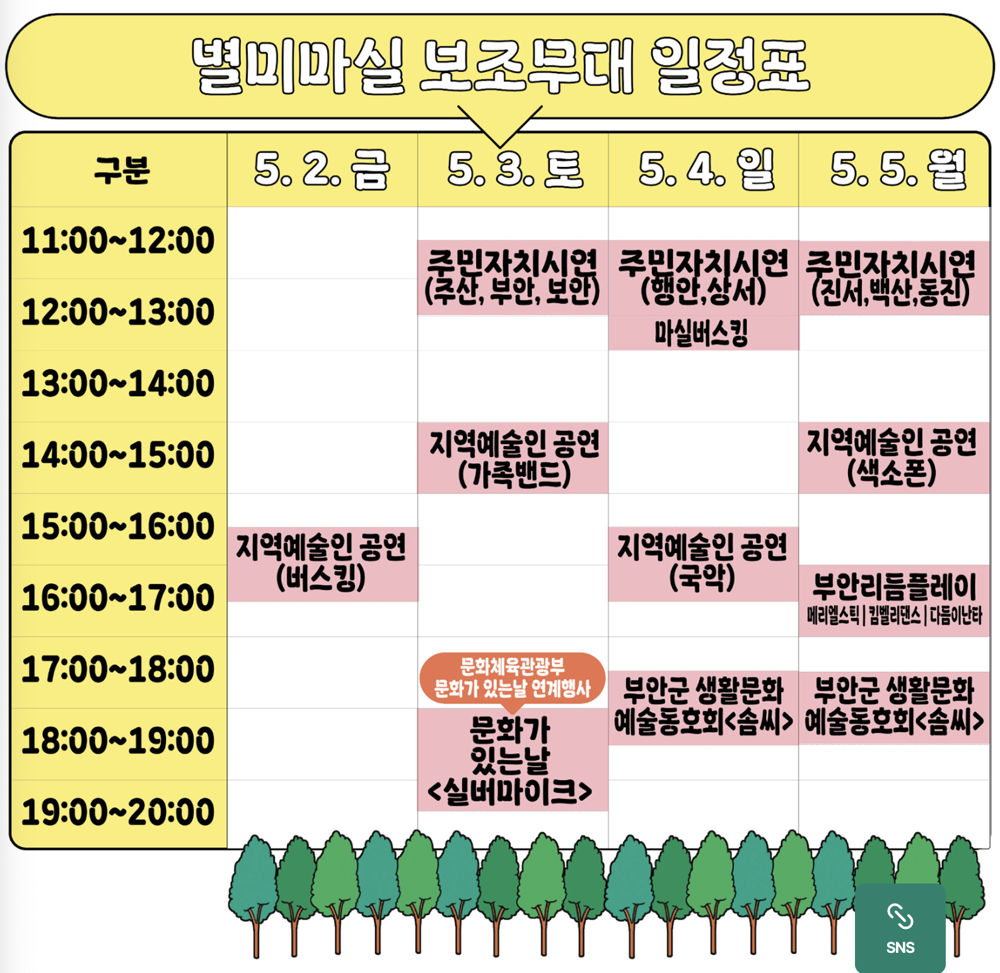
어린이
- ‘핑크퐁과 튼튼쌤의 댄스 파티’
- 5월 3일, 1일 2회(11:00, 15:30) 진행
- 율동과 동요 콘서트로 어린이들이 신나게 참여 가능
- ‘꿈꾸는 인형극장’
- 한국인형극협회와 함께하는 인형극 공연
- 남녀노소 모두 즐길 수 있는 가족형 공연
- ‘몬스터 키즈파크’
- 부안의 산, 들, 바다, 노을을 테마로 한 자연 체험형 놀이공간
- 신체활동과 생태 어드벤처 놀이터 제공, 어린이 신체활동에 적합
- ‘뽕뽕마실랜드’
- 임시 유원시설로 놀이기구 및 체험 공간
- 아이들이 즐길 수 있는 놀이 공간
- ‘마실 프렌즈 구축 대작전’
- 축제장 곳곳에 흩어진 마실프렌즈 캐릭터 찾기 체험
-선착순 선물 제공, 어린이 참여 유도 프로그램
- ‘아르떼 오감극장’
- 어린이 매직쇼, 젬베체험, 싱잉볼 명상 및 요가 등 문화예술 체험
주차
- 축제 장소인 부안 해뜰마루 지방정원 내 주차장 있음.
- 넉넉하다고 하지만 축제기간이니 아무래도 복잡할것 같음
먹거리
- 로컬푸드 팜파티: 축제장에서 고기, 해산물을 구입해 직접 구워먹음.
- 변산명인바지락죽
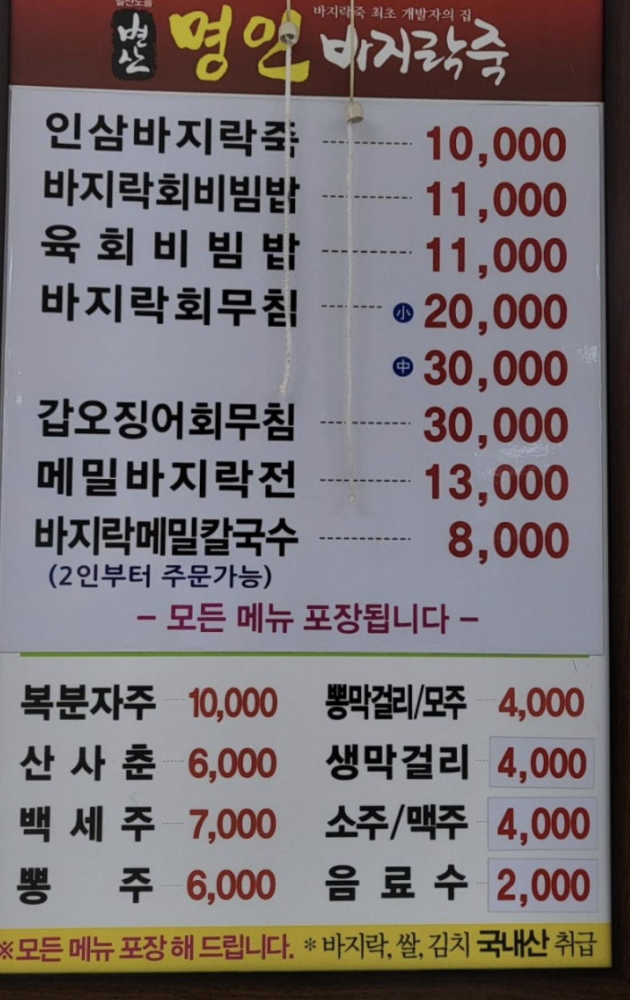
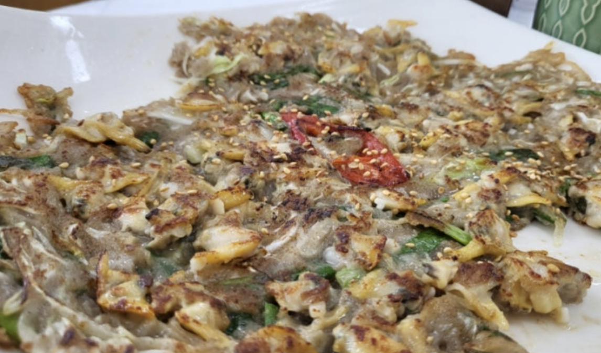
- 계화회관- 백합요리전문점
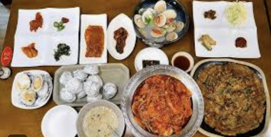
- 할매피순대
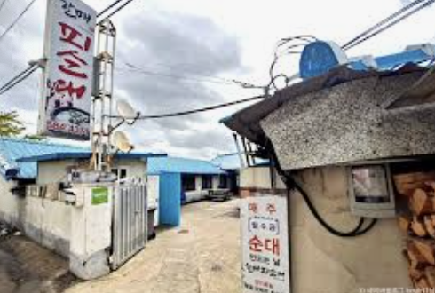
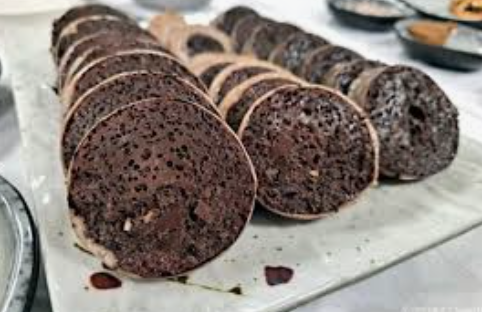
- 곰소아리랑식당 - 신선한 해산물요리
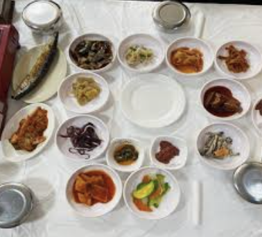
- 슬지제빵소
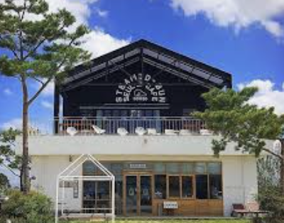
Summary
- 장점
- 아이를 위한 프로그램등은 많은듯
- 초대가수들 및 쉐프를 보니까 돈은 좀 쓰는듯 (볼게 있을듯)
- 야경이 좋아보임
- 단점
- 거리가 좀 있음.
- 애견프로그램은 딱히 없음. 우리하니는 거기서 딱히 할게없음.
- 주차공간은 넉넉하다고 하지만 의심이감.
- 축제기간이라 음식값이 비쌀것같음..